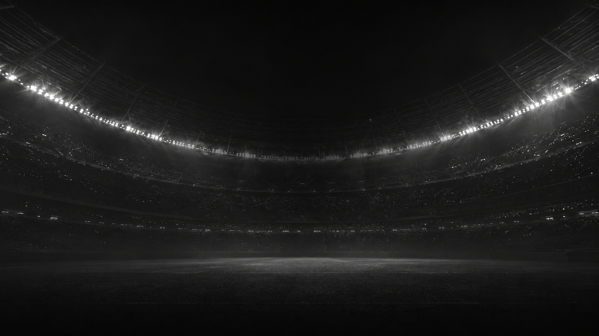
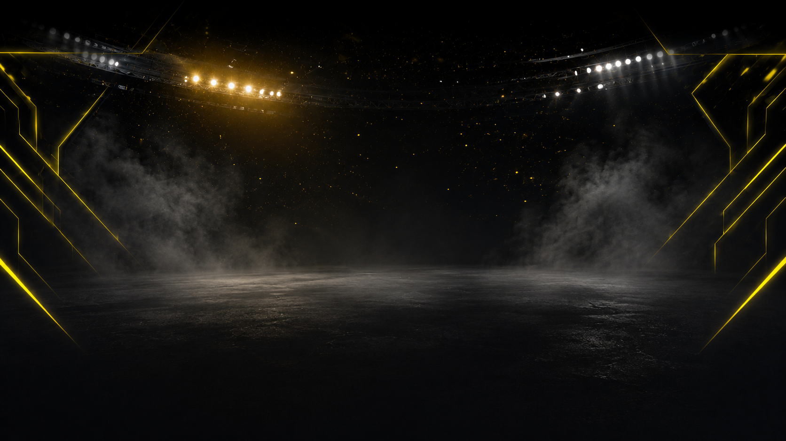

O Gap
O gol saiu.
Seu fantasy nem soube.
- Você aposta num app, escala o fantasy noutro, comenta num terceiro
- Nenhum deles sabe que a partida está acontecendo agora
- O momento que importa se perde entre abas que não se falam
O Hatrick junta tudo num feed só — assiste, aposta e joga a Copa real, ao vivo, com o feed TxLINE.
01 · A resposta — um perfil, dois caminhos

REC · captura de tela (PC)Desktop · onboarding
Entrar → Pack → XI → o garfo
screen-capture PC: login → faucet → pack (slow-mo) → squad → 2 CTAs
login e-mail (Privy)
faucet test USDC
pack foil em slow-mo
carta = Core NFT (Solscan)
montar XI
CTA Watch Live / Challenge
A home · seu hub
REC · captura de tela (PC)
Home · scroll ↓
Uma tela: ao vivo em cima, seu time embaixo
scroll suave: hero ao vivo → My Fantasy Team (formação) → stats → My Bets
hero ao vivo (topo)
My Fantasy Team + formação
stats do jogo
My Bets
daqui: assistir ou jogar
02 · Caminho 1 — Ao Vivo
REC · no gol: 3 telas simultâneas
TxLINE · SSE cru
Action:"goal"
Confirmed:false → during
Confirmed:true → settle
Confirmed:false → during
Confirmed:true → settle
Desktop · home hero
Celular
Assistir → Apostar → GOL em 3 telas → Liquida
desktop contínuo · no gol, split de 5s: SSE + desktop + celular no mesmo segundo
Placar + Events reais
Odds se movendo
colocar aposta
gol: 3 telas no mesmo segundo
HatBot reage
liquida sozinho
Solscan da tx de payout
03 · Caminho 2 — Fantasy 1v1 · PC × celular
REC · 2 jogadores, 2 aparelhos
PC · Jogador 1
VS
Celular · J2
Desafio no PC → aceito no celular → mesmo duelo, duas telas
split-screen o segmento inteiro · resultado simultâneo nos dois aparelhos
desafiar no PC
aceitar no celular
mesmo duelo 3D nas 2 telas
atributos de dados reais
resultado simultâneo
Requisito · Como a TxLINE alimenta o backend
O mesmo feed move assistir e jogar.
TxLINE SSE · scores + odds▶
NestJS mapper▶
WebSocket▶
UI ao vivo▶
Solana · liquida no resultado
Conectar
POST/auth/guest/start
POST/api/token/activate
Ao vivo · SSE
GET/api/scores/stream
GET/api/odds/stream
Estado & replay
GET/api/fixtures/snapshot
GET…/snapshot/:fixture
GET…/updates/dia/hora · replay
Sem jogo ao vivo na revisão? A demo re-toca o histórico real pelo mesmo pipeline — replay responde em tempo real do mesmo jeito.
Negócio · Monetização & futuro
A Copa acaba. O Hatrick não.
◆ Economia de duas pontas
Store: venda primária de packs · Marketplace: mercado secundário de cartas entre jogadores · rake das apostas · premium.
◆ Escala
350+ ligas · 30+ esportes. O mesmo motor roda basquete, tênis e e-sports. Fantasy always-on = retenção o ano todo.
Roadmap: mainnet + settlement real (Merkle proof + validate_stat), mercados por jogador, mobile.